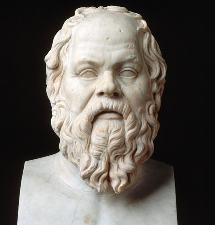

Socrates
Socrates was a Greek Philosopher and is credited as one of the founders of Western Philosophy.
Socrates founded a mode of argument known as "Socrates elenchus."
"In a dialogue, elenchus is the "Socratic method" of questioning someone to test the cogency, consistency, and credibility of what he or she has said." - ThoughtCo.
"Socrates' famous method of refutation--the elenchus--tended to induce the experience of emptiness in others: an interlocutor would begin thinking he knew what justice or courage or piety is, and in the course of the conversation would be reduced to confusion and self-contradiction. For his own part, Socrates was the ancient Hellenic version of the Cheshire cat, fading away into his own smile. . . . In short, Socrates had an uncanny gift for bringing others to the brink of anxiety." (Jonathan Lear, "The Examined Life." The New York Times, October 25, 1998)